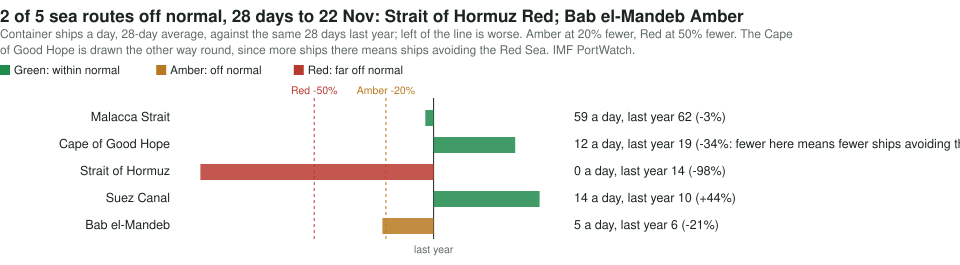
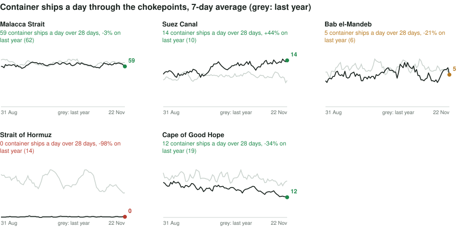
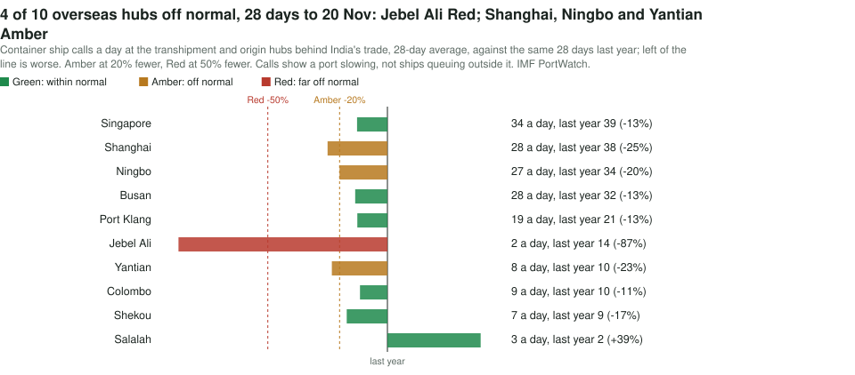

Weekly readings
The readings that move week to week: ships through the sea chokepoints and at the overseas hubs, how long ships wait at Asian ports, container rates, cancelled sailings, customs week by week, and the two-week cyclone outlook. The colours on the globe for sea routes and overseas hubs come from here.
How fresh each reading is
The newest reading on file for each source, when the next one is normally out, and whether it has arrived. "Late" means the source has not published, or our fetch has not picked it up; either way the readings below it are older than they should be.
| Source | Latest reading | Next | Status | From |
|---|---|---|---|---|
| Sea chokepoints (IMF PortWatch) | 22 Nov | by 2 Dec | on time | weekly |
| Overseas hubs (IMF PortWatch) | 20 Nov | by 30 Nov | on time | weekly |
| Container rates (Drewry, SCFI) | 6 Nov | was due 15 Nov | late | weekly |
| Cancelled sailings (Drewry) | 6 Nov | was due 22 Nov | late | fortnightly |
| Port waits (Kuehne+Nagel) | 3 Nov | was due 12 Nov | late | weekly |
| Customs week by week (our log) | 23 Nov | by 2 Dec | on time | weekly |
| Cyclone outlook (IMD) | 12 Nov | was due 20 Nov | late | Thursdays |
| MJO (Bureau of Meteorology) | 24 Nov | by 1 Dec | on time | daily |
Sea routes
Container ships a day through the chokepoints on India's routes, 28-day average, against the same days last year. Amber at 20% fewer, Red at 50% fewer; at the Cape of Good Hope more ships means ships avoiding the Red Sea, so it is read the other way.


IMF PortWatch, from ships' positions.
Overseas hubs
Container ship calls a day at the transhipment and origin hubs behind India's trade, against last year. Amber at 20% fewer, Red at 50% fewer.

IMF PortWatch.
How long ships wait at Asian ports
Kuehne+Nagel's weekly reading of the average wait for a berth over seven days, at the Asian and Gulf ports on India's routes, longest wait first.
| Port | Average wait | Published |
|---|---|---|
| Nhava Sheva | 2.2 days | 3 Nov |
| Shanghai | 2.1 days | 3 Nov |
| Manila | 2.1 days | 3 Nov |
| Jakarta | 1.6 days | 3 Nov |
| Colombo | 1.6 days | 3 Nov |
| Yantian | 1.4 days | 3 Nov |
| Qingdao | 1.4 days | 27 Oct |
| Port Klang | 1.4 days | 3 Nov |
| Singapore | 1.2 days | 27 Oct |
| Busan | 1.1 days | 3 Nov |
| Shekou | 1.1 days | 3 Nov |
| Hong Kong | 1.0 days | 3 Nov |
Kuehne+Nagel weekly port updates.
Container rates
The two free weekly benchmarks, with the change on the week before. They price the main East–West routes, not Indian lanes, so they show the direction of the market rather than what an Indian shipper pays.
| Index | Route | Value | On the week | Date |
|---|---|---|---|---|
| Drewry WCI | Shanghai to New York | 9,303 | 5 Nov | |
| Drewry WCI | Shanghai to Los Angeles | 7,539 | 5 Nov | |
| Drewry WCI | Composite | 4,389 | -1.0% | 5 Nov |
| Drewry WCI | Shanghai to Genoa | 4,166 | 5 Nov | |
| SCFI | Comprehensive Index | 3,633 | -1.5% | 6 Nov |
| Drewry WCI | Shanghai to Rotterdam | 3,615 | 5 Nov |
Drewry World Container Index ($ per 40-foot box); Shanghai Containerized Freight Index.
Cancelled sailings
Drewry counted 46 cancelled sailings out of 717 planned on the main East–West routes between weeks 46 and 50, 6% of the schedule. A cancelled sailing pushes boxes to the next ship, usually a week later.
Drewry Cancelled Sailings Tracker, 06 Nov.
Customs, week by week
The median share of import bills cleared within 48 hours each week, at the biggest gateways, biggest first. A gateway sliding several weeks running matters more than one slow day.
| Gateway | Week of 2 Nov | Week of 9 Nov | Week of 16 Nov | Week of 23 Nov |
|---|---|---|---|---|
| Nhava Sheva, sea | 40% | 51% | 42% | 50% |
| Delhi, air | 88% | 78% | 88% | 80% |
| Mundra, sea | 37% | 23% | 35% | 25% |
| Chennai, sea | 51% | 40% | 40% | 32% |
| Mumbai, air | 78% | 62% | 72% | 69% |
| Chennai, air | 87% | 84% | 86% | 80% |
| Bengaluru, air | 79% | 77% | 82% | 73% |
| Kolkata, sea | 45% | 37% | 28% | 30% |
| Kandla, sea | 78% | 52% | 88% | 73% |
| Visakhapatnam, sea | 39% | 46% | 45% | 62% |
| Tuticorin, sea | 7% | 5% | 18% | 7% |
| Hyderabad, air | 79% | 78% | 81% | 68% |
| Bengaluru inland depot | 37% | 38% | 41% | 19% |
| Patparganj inland depot, Delhi | 34% | 17% | 20% | 35% |
CBIC ICEDASH, our daily log rolled up by week.
The two-week cyclone outlook
IMD's extended-range outlook for the Bay of Bengal and the Arabian Sea was last issued on 12 Nov. It comes out on Thursdays; read it here. The Madden-Julian Oscillation, a pulse of tropical weather that tends to set off Bay of Bengal storms when it sits over the Indian Ocean (phases 2 to 4), was in phase 3 at strength 1.14 on 24 Nov, over the Indian Ocean. It is a cue to watch the east coast, never a forecast.
IMD extended-range outlook; Australian Bureau of Meteorology MJO index.
Part of the India Freight Monitor, rebuilt every morning from public data with no hand edits. I'm Priyanka Bharadwaj; if you move goods through India, get in touch on LinkedIn.